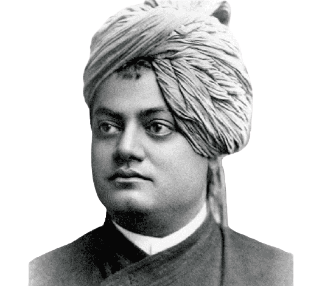

"You have to grow from the inside out. None can teach you, none can make you spiritual. There is no other teacher but your own soul."
Swami Vivekananda was a Hindu monk and a key figure in the introduction of Vedanta and Yoga to the Western world. He was born Narendranath Datta in Kolkata in 1863. After meeting the mystic Ramakrishna in 1881, he became his disciple.
Vivekananda traveled to the United States in 1893 to attend the World's Parliament of Religions, where he gave a series of speeches that introduced Hinduism to the West. He returned to India in 1899 and founded the Ramakrishna Mission, a social and spiritual organization that works to uplift the poor and needy.
Vivekananda died in 1902 at the age of 39, but his teachings continue to inspire people around the world.